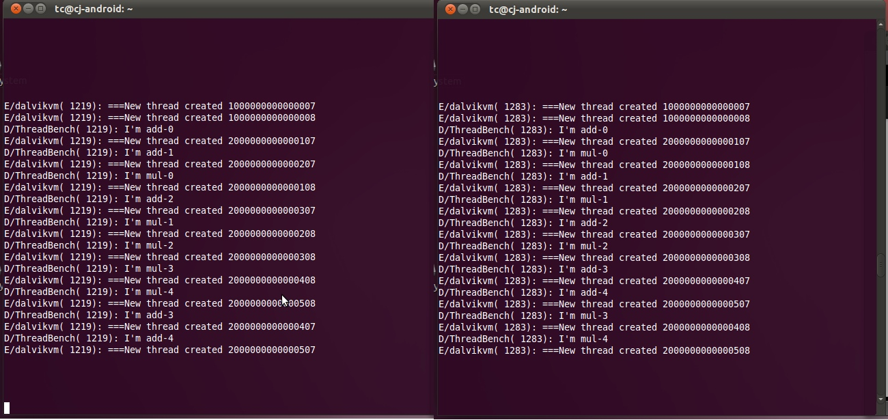

In the multi-thread environment, how to identify a certain thread is a challenging work. For the reason that the threads may be created in different order, we cannot recognize them by their absolute order of creation. However, each thread should create its children (threads) in the same order, if the code stays the same between two execution. In this way, we can use the thread's position in its family tree to locate one certain thread.
Let's see an example. A create B1,B2; B1 create C1; B2 create C2,C3. So we get the following creation tree:
A |--------| | | B1 B2 | |-----------| C1 C2 C3However, the absolute creation order may be different. The following two sequences are both valid, for instance.
There are several ways to identify the certain threads. Take the easiest way as an example: we can define a unique identifier ID(T) for a thread T and its reincarnation inductively, as follows. If T is the initial thread of Java program, then ID(T) = [1]. Otherwise, suppose that T is the kth thread created by its parent. And its parent thread can be retrieved by function parent(T). Then we have
ID(T) = ID(parent(T))+[K]
Consider the above scenario, the ID for the threads are as following:
A: [1]
B1: [1][1]
B2: [1][2]
C1: [1][1][1]
C2: [1][2][1]
C3: [1][2][2]
However, the previous naive way of identification has some drawbacks.
In order to bypass the above disadvantages, a more efficient and elegant methodolgy is using a hash value to identify each thread. In detail, the system gives each thread a hash value based on its parent's hash and its ordinal number of creation. The hash value of thread T, which is the Kth child of its parent, can be calculated by the formula:
ID(T) = hash(ID(parent(T)),K)
Consider the above scenario, we assume thread "A" have a hash value v1 as its identification.
A: v1
B1: v2 = hash(v1,1)
B2: v3 = hash(v1,2)
C1: hash(v2,1)
C2: hash(v3,1)
C3: hash(v3,2)
In this part, you should design your own way of thread identification and implement it into the Dalvik VM. To verify the validaty of your scheme, you should print the identification each time when the thread is created. In our test apk, the thread will print their id through the "adb logcat". If your work is correct, you will see some similar result as following:
In the above snapshot, we can find out that the "add-x" and "mul-x" are created in different order. However, our identifiers, which is printed after the sentence "I'm add-x" or "I'm mul-x", keep the same.